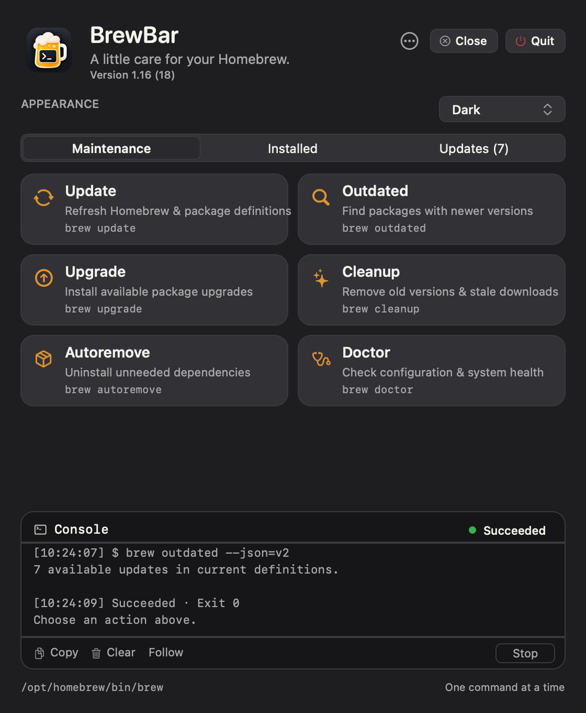
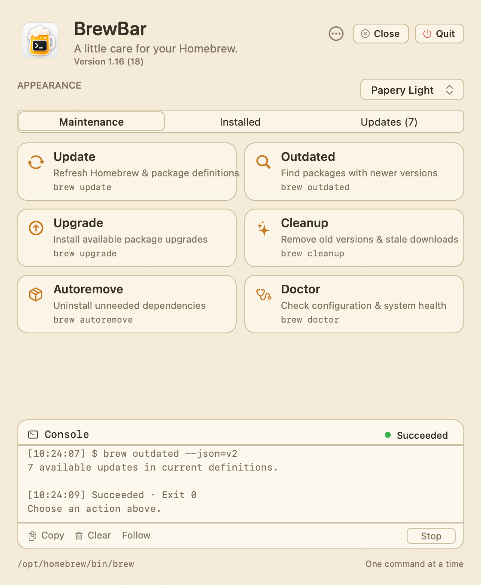
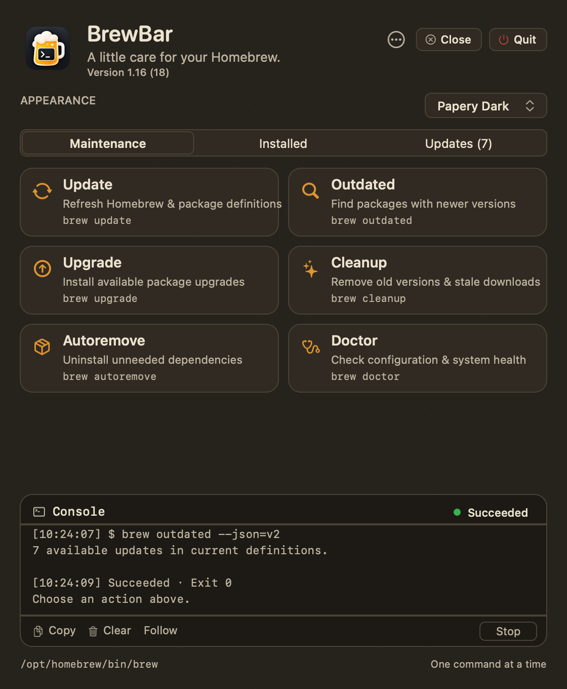
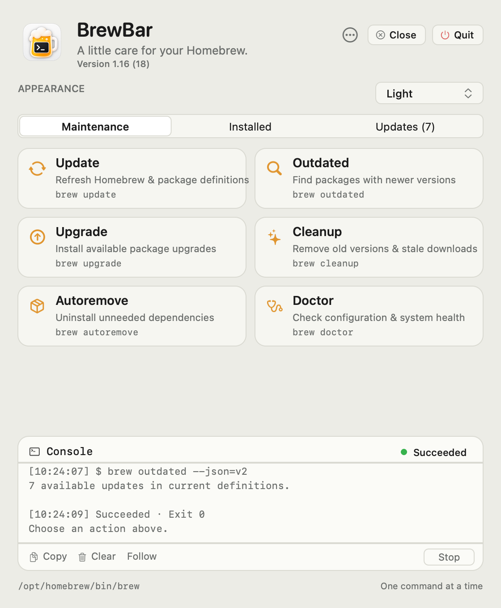
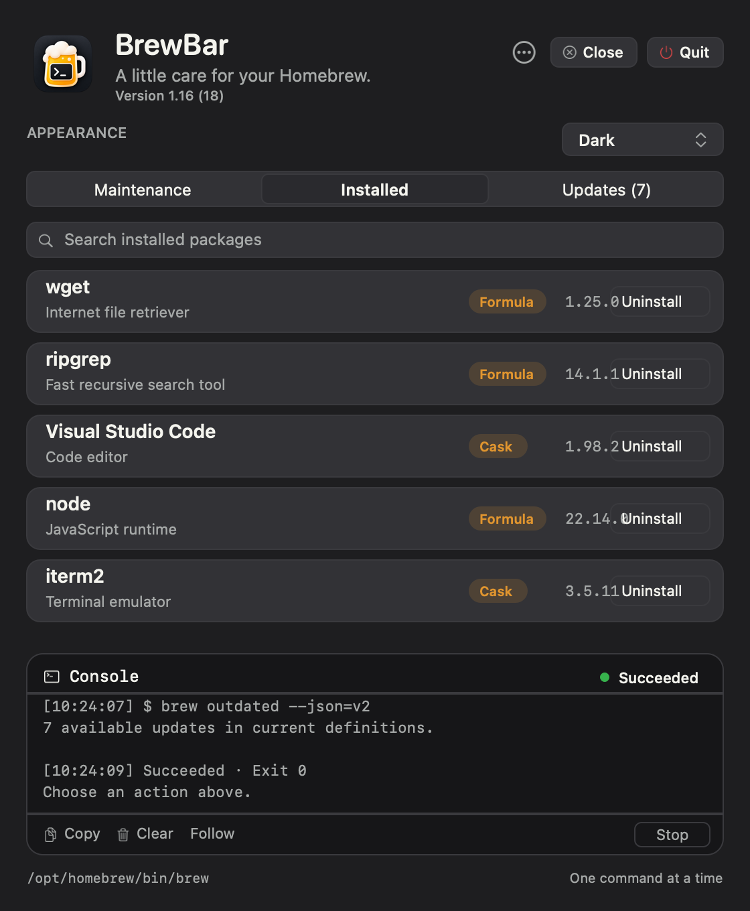
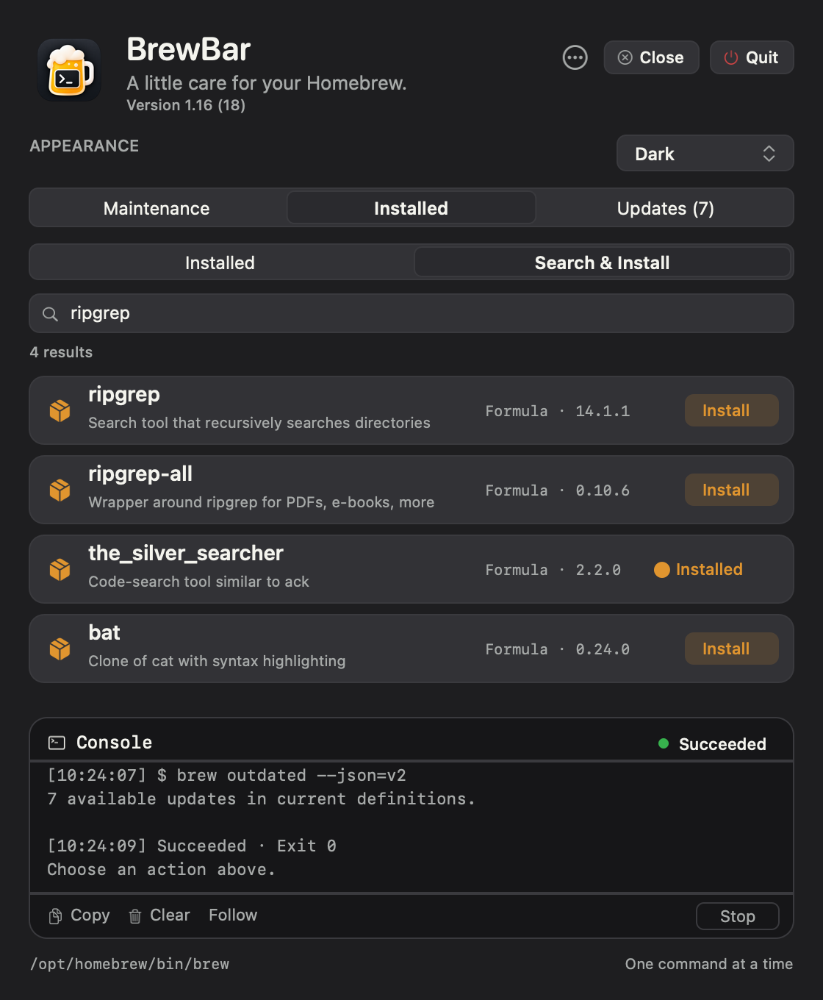
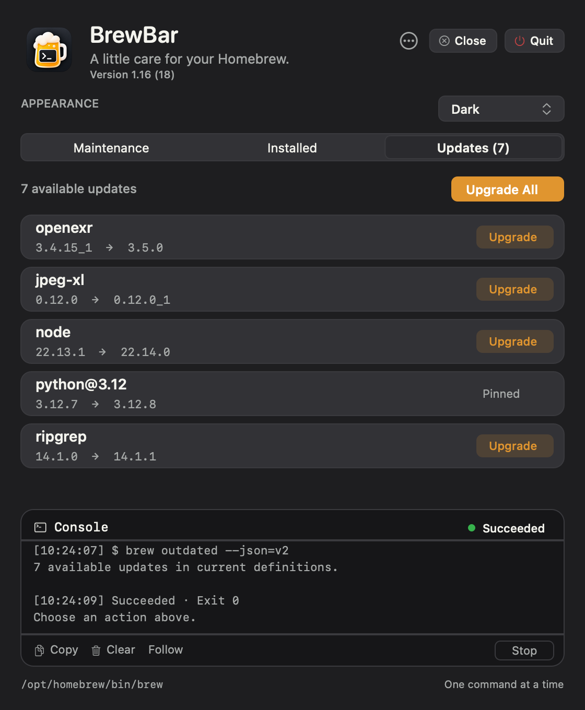
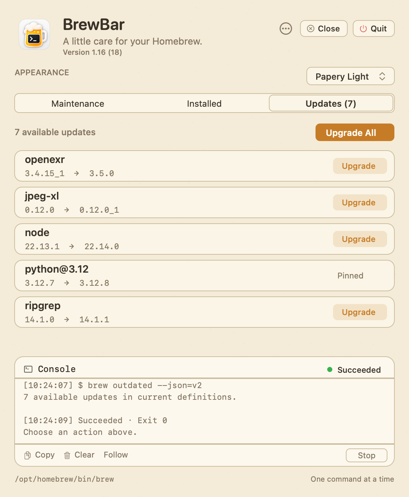
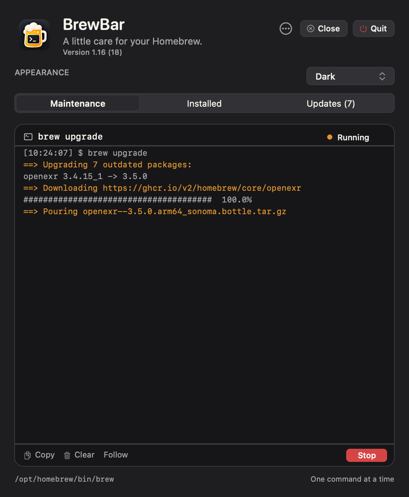
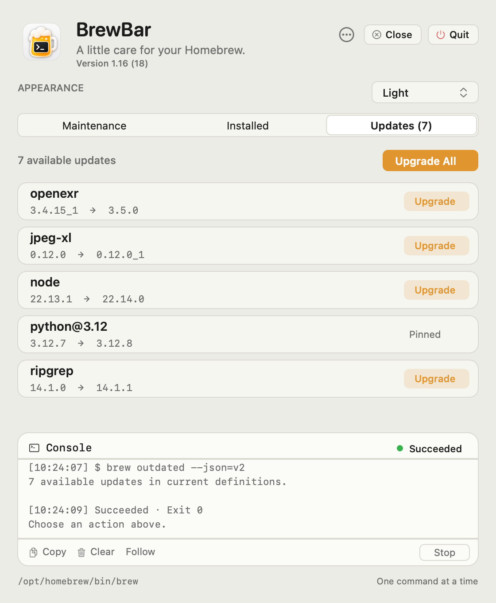

A HOMEBREW MENU-BAR APP FOR MAC
A little care
for your Homebrew.
Update, upgrade, and clean up Homebrew from the menu bar. Browse installed packages and manage updates — with live output and no terminal.
Download for macOSv1.15.1 / macOS 13+ / Apple Silicon

01 / THE PANEL
One window.
Every chore.
Maintenance actions, your installed inventory, available updates, and a live console — all in a single menu-bar panel.

Each action runs a real brew command with fixed arguments — no shell interpolation. Close tucks the panel away; BrewBar stays in the menu bar.
02 / THE LOOKS
System, light,
dark — or paper.
BrewBar follows your system appearance or locks to Light, Dark, or one of two warm Papery themes — parchment and ink, or charcoal paper. Here are a few of its screens.
{kind=link}

Papery LightParchment & ink ↗{kind=link}

Papery DarkCharcoal paper ↗ MaintenanceDark ↗
MaintenanceDark ↗
{kind=link}

MaintenanceLight ↗{kind=link}

InstalledFormulae & casks ↗{kind=link}

Search & InstallFind & install ↗{kind=link}

UpdatesAvailable upgrades ↗{kind=link}

UpdatesPapery Light ↗{kind=link}

ConsoleLive output ↗{kind=link}

UpdatesLight ↗Images are native offscreen renders of BrewBar's interface. Select an image to view it larger.
03 / THE DETAILS
Built to
behave.
- Maintenance
- Update, Outdated, Upgrade, Cleanup, Autoremove, and Doctor — each a real
brewcommand run with fixed, validated arguments. - Inventory & install
- Browse installed formulae and casks with search, then uninstall with a confirmation. Switch to Search & Install to search all of Homebrew — each result shows its description, version, and whether it's already installed — and install with a confirmation. Homebrew's dependency checks stay active; the installed list refreshes automatically.
- Updates
- See installed → current versions from
brew outdated, upgrade individually or all at once. Pinned packages are labeled. - Live console
- Merged stdout/stderr in arrival order, timestamps, duration, and the real exit code. Stop escalates SIGINT → SIGTERM → SIGKILL.
- Appearance
- System, Light, Dark, or the warm Papery Light and Papery Dark themes — saved across launches, with matching light/dark artwork. A visible version line and Close / Quit controls.
- Considerate
- One command at a time. Closing the panel keeps a job running. Quit is blocked while busy. No Dock icon; a menu-bar template glyph.
- Download & unzip
Open the ZIP to find
BrewBar.app. - Move & open
Drag it to Applications, then right-click → Open the first time.
- Find the mug
Click the Terminal Mug glyph in the menu bar to open the panel.
Compatibility & installation notes
This build is ad-hoc signed and is not Apple-notarized. macOS may ask you to approve it in Privacy & Security, or you can build locally from src/ with ./build.sh.
BrewBar needs an existing Homebrew install at /opt/homebrew. It reads your login environment to locate brew and shows the resolved path in the footer.
Optimized arm64 build and runner tests passed. Interactive UI and VoiceOver checks are recommended manually; the panel is a streaming console, not a full terminal.